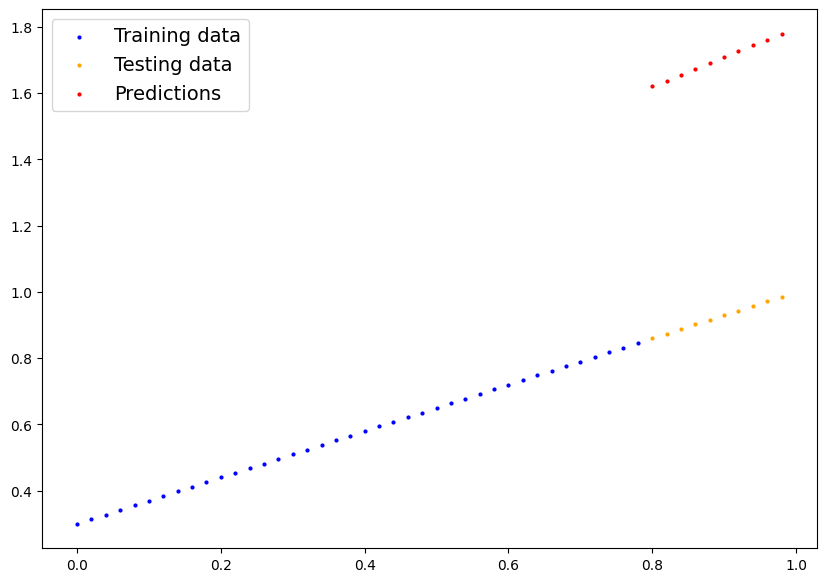

import torch
from torch import nn # nn contains all of PyTorch's building blocks for neural networks
import matplotlib.pyplot as plt
# Check PyTorch version
torch.__version__'2.1.0+cu121'import torch
from torch import nn # nn contains all of PyTorch's building blocks for neural networks
import matplotlib.pyplot as plt
# Check PyTorch version
torch.__version__'2.1.0+cu121'# Create *known* parameters
weight = 0.7
bias = 0.3
# Create data
start = 0
end = 1
step = 0.02
X = torch.arange(start, end, step).unsqueeze(dim=1)
y = weight * X + bias
X[:10], y[:10](tensor([[0.0000],
[0.0200],
[0.0400],
[0.0600],
[0.0800],
[0.1000],
[0.1200],
[0.1400],
[0.1600],
[0.1800]]),
tensor([[0.3000],
[0.3140],
[0.3280],
[0.3420],
[0.3560],
[0.3700],
[0.3840],
[0.3980],
[0.4120],
[0.4260]]))X.shape, y.shape(torch.Size([50, 1]), torch.Size([50, 1]))# Create train/test split
train_split = int(0.8 * len(X)) # 80% of data used for training set, 20% for testing
X_train, y_train = X[:train_split], y[:train_split]
X_test, y_test = X[train_split:], y[train_split:]
len(X_train), len(y_train), len(X_test), len(y_test)(40, 40, 10, 10)def plot_predictions(train_data=X_train,
train_labels=y_train,
test_data=X_test,
test_labels=y_test,
predictions=None):
"""
Plots training data, test data and compares predictions.
"""
plt.figure(figsize=(10, 7))
# Plot training data in blue
plt.scatter(train_data, train_labels, c="b", s=4, label="Training data")
# Plot test data in green
plt.scatter(test_data, test_labels, c="orange", s=4, label="Testing data")
if predictions is not None:
# Plot the predictions in red (predictions were made on the test data)
plt.scatter(test_data, predictions, c="r", s=4, label="Predictions")
# Show the legend
plt.legend(prop={"size": 14});plot_predictions();class Linear(nn.Module):
def __init__(self):
super().__init__()
self.weights = nn.Parameter(torch.rand(1, requires_grad=True))
self.bias = nn.Parameter(torch.rand(1, requires_grad=True))
def forward(self, x):
return self.weights * x + self.bias# Set manual seed since nn.Parameter are randomly initialzied
torch.manual_seed(42)
# Create an instance of the model (this is a subclass of nn.Module that contains nn.Parameter(s))
# model_0 = LinearModel()
model_0 = Linear()
# Check the nn.Parameter(s) within the nn.Module subclass we created
list(model_0.parameters())[Parameter containing:
tensor([0.8823], requires_grad=True),
Parameter containing:
tensor([0.9150], requires_grad=True)]# List named parameters
model_0.state_dict()OrderedDict([('weights', tensor([0.8823])), ('bias', tensor([0.9150]))])with torch.inference_mode():
preds = model_0(X_test)plot_predictions(predictions=preds)
# Create the loss function
loss_fn = nn.L1Loss() # MAE loss is same as L1Loss
# Create the optimizer
optimizer = torch.optim.SGD(params=model_0.parameters(), # parameters of target model to optimize
lr=0.01) # learning rate (how much the optimizer should change parameters at each step, higher=more (less stable), lower=less (might take a long time))torch.manual_seed(42)
# Set the number of epochs (how many times the model will pass over the training data)
epochs = 100
# Create empty loss lists to track values
train_loss_values = []
test_loss_values = []
epoch_count = []
for epoch in range(epochs):
### Training
# Put model in training mode (this is the default state of a model)
model_0.train()
# 1. Forward pass on train data using the forward() method inside
y_pred = model_0(X_train)
# print(y_pred)
# 2. Calculate the loss (how different are our models predictions to the ground truth)
loss = loss_fn(y_pred, y_train)
# 3. Zero grad of the optimizer
optimizer.zero_grad()
# 4. Loss backwards
loss.backward()
# 5. Progress the optimizer
optimizer.step()
### Testing
# Put the model in evaluation mode
model_0.eval()
with torch.inference_mode():
# 1. Forward pass on test data
test_pred = model_0(X_test)
# 2. Caculate loss on test data
test_loss = loss_fn(test_pred, y_test.type(torch.float)) # predictions come in torch.float datatype, so comparisons need to be done with tensors of the same type
# Print out what's happening
if epoch % 10 == 0:
epoch_count.append(epoch)
train_loss_values.append(loss.detach().numpy())
test_loss_values.append(test_loss.detach().numpy())
print(f"Epoch: {epoch} | MAE Train Loss: {loss} | MAE Test Loss: {test_loss} ")Epoch: 0 | MAE Train Loss: 0.6860889196395874 | MAE Test Loss: 0.7637526988983154
Epoch: 10 | MAE Train Loss: 0.5708791017532349 | MAE Test Loss: 0.6290428042411804
Epoch: 20 | MAE Train Loss: 0.45566922426223755 | MAE Test Loss: 0.4943329691886902
Epoch: 30 | MAE Train Loss: 0.34045934677124023 | MAE Test Loss: 0.35962313413619995
Epoch: 40 | MAE Train Loss: 0.2252494841814041 | MAE Test Loss: 0.2249133139848709
Epoch: 50 | MAE Train Loss: 0.1100396141409874 | MAE Test Loss: 0.09020347893238068
Epoch: 60 | MAE Train Loss: 0.009724985808134079 | MAE Test Loss: 0.020998019725084305
Epoch: 70 | MAE Train Loss: 0.006216754671186209 | MAE Test Loss: 0.014099234715104103
Epoch: 80 | MAE Train Loss: 0.002788322512060404 | MAE Test Loss: 0.005826681852340698
Epoch: 90 | MAE Train Loss: 0.007095950655639172 | MAE Test Loss: 0.00754010071977973 new_preds = model_0(X_test)new_predstensor([[0.8661],
[0.8801],
[0.8940],
[0.9080],
[0.9220],
[0.9359],
[0.9499],
[0.9638],
[0.9778],
[0.9917]], grad_fn=<AddBackward0>)You can’t plot a differentiable tensor.
try: plt.plot(new_preds)
except Exception as e: print(e)Can't call numpy() on Tensor that requires grad. Use tensor.detach().numpy() instead.
p = new_preds.detach().numpy()plot_predictions(predictions=p)from pathlib import Path
# 1. Create models directory
MODEL_PATH = Path("models")
MODEL_PATH.mkdir(parents=True, exist_ok=True)
# 2. Create model save path
MODEL_NAME = "01_pytorch_workflow_model_0.pth"
MODEL_SAVE_PATH = MODEL_PATH / MODEL_NAME
# 3. Save the model state dict
print(f"Saving model to: {MODEL_SAVE_PATH}")
torch.save(obj=model_0.state_dict(), # only saving the state_dict() only saves the models learned parameters
f=MODEL_SAVE_PATH)Saving model to: models/01_pytorch_workflow_model_0.pthtorch.load(MODEL_SAVE_PATH)OrderedDict([('weights', tensor([0.6977])), ('bias', tensor([0.3080]))])save_model = Linear()
save_model.load_state_dict(torch.load(MODEL_SAVE_PATH))<All keys matched successfully>save_model(X_test)tensor([[0.8661],
[0.8801],
[0.8940],
[0.9080],
[0.9220],
[0.9359],
[0.9499],
[0.9638],
[0.9778],
[0.9917]], grad_fn=<AddBackward0>)X_test.shapetorch.Size([10, 1])You can practically use any shape tensor for prediction as in the forward pass, you only multiply it with a scalar and then add one. Due to operator broadcasting, you won’t face any shape mismatch errors.
save_model(torch.rand((10, 9)))tensor([[0.7863, 0.9844, 0.6076, 0.6541, 0.5765, 0.3656, 0.8242, 0.3105, 0.8734],
[0.9178, 0.9867, 0.5746, 0.3702, 0.7353, 0.8495, 0.3096, 0.5777, 0.4477],
[0.6263, 0.4851, 0.5142, 0.5461, 0.3253, 0.9431, 0.9493, 0.6021, 0.6171],
[0.5145, 0.3418, 0.3174, 0.7865, 0.4653, 0.4326, 0.6296, 0.5407, 0.5440],
[0.6680, 0.5828, 0.5367, 0.4898, 0.3729, 0.9493, 0.5172, 0.7493, 0.5358],
[0.6852, 0.9821, 0.8176, 0.3545, 0.7953, 0.9880, 0.7486, 0.8907, 1.0008],
[0.6034, 0.7292, 0.4144, 0.5850, 0.9152, 0.8357, 0.4361, 0.3771, 0.4185],
[0.3126, 0.3877, 0.5706, 0.8923, 0.7152, 0.3915, 0.3770, 0.8304, 0.3974],
[0.6139, 0.8242, 0.4954, 0.6188, 0.6265, 0.5743, 0.4800, 0.3459, 0.3749],
[0.4701, 0.9938, 0.4883, 0.4226, 0.7414, 0.7530, 0.8480, 0.9220, 0.8511]],
grad_fn=<AddBackward0>)